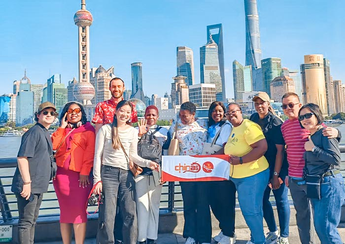
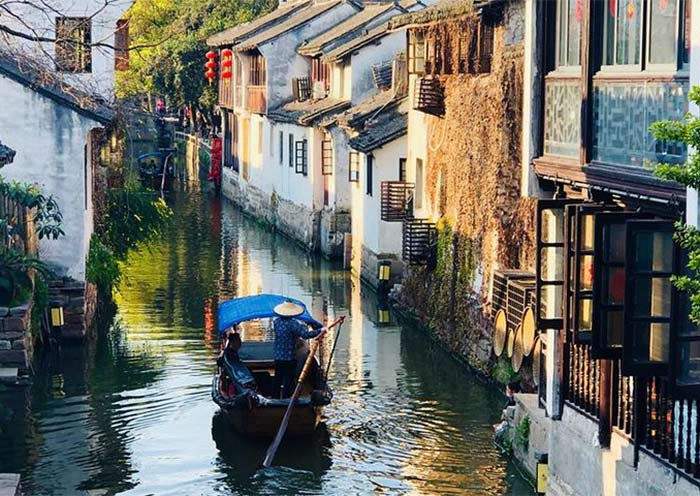
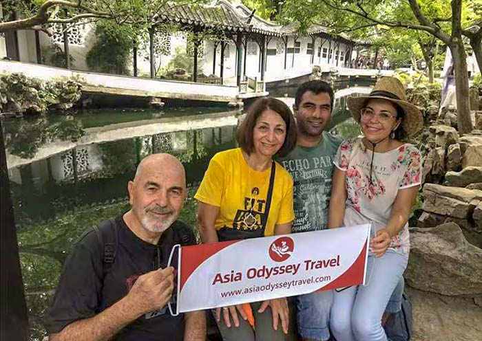
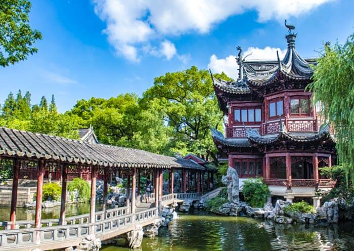
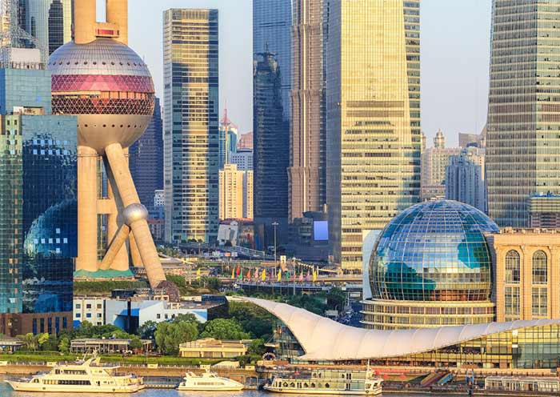
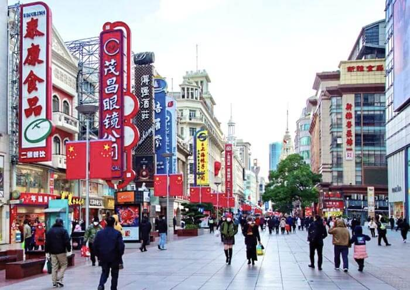

Best Time to Visit Shanghai 2026: A Month-by-Month Guide
When is the best time to visit Shanghai? Compare temperatures, rainfall, air quality and crowds by month to pick the perfect season for your trip.

Shanghai Airport to City Center: Maglev, Metro, Taxi & Transfer Guide
Compare the Maglev, Metro Line 2, taxis, and private airport transfers from PVG (Pudong) and SHA (Hongqiao) to downtown Shanghai — plus travel times and costs.

Shanghai 240-Hour (10-Day) Visa-Free Transit: Rules & How to Use It
Shanghai now allows citizens of 54 countries to stay up to 240 hours (10 days) visa-free as transit passengers. Learn the eligibility rules, which entry/exit ports work, and how to plan your trip.

Zhujiajiao Water Town Guide: How to Visit the "Venice of Shanghai"
Everything you need to know about visiting Zhujiajiao — Shanghai's most famous water town. How to get there, top sights, the canals, when to go, and tour options from Shanghai.
Shanghai 3-Day Itinerary: The Perfect First-Timers Plan
A worry-free 3-day Shanghai itinerary for first-timers: the Bund, Yu Garden, Shanghai Tower, the Former French Concession, Nanjing Road, and a water-town day trip — with practical transport and time-saving tips.

Suzhou Day Trip from Shanghai: Gardens, Canals & Silk
How to do a Suzhou day trip from Shanghai: getting there by high-speed rail, the must-see classical gardens, the ancient canals, silk culture, and how to avoid the crowds.
The Bund Shanghai: What to See, Best Views & Photo Spots
Your guide to the Bund, Shanghai's most iconic waterfront: the best time to visit, the skyline views, the colonial architecture, photo spots, and how to combine it with nearby sights.

Shanghai Street Food: What to Eat, Where to Find It
The essential Shanghai street-food primer: xiaolongbao, shengjianbao, scallion oil noodles and more — where to find them, what each dish is, and how to eat like a local.

Yu Garden Shanghai: Tickets, Hours, What to See & Insider Tips
Complete guide to Yu Garden in Shanghai's Old City: opening hours, entrance fees, six scenic areas, the Exquisite Jade Rock, the Great Rockery and the Nine-Turn Bridge — plus the lively Yuyuan Bazaar.

French Concession Shanghai: Best Streets, Cafés & What to See
A walking guide to Shanghai's Former French Concession: tree-lined Wukang Road, the boutiques and cafés of Tianzifang, heritage villas on Sinan Road, and how to see it best with a private guide.

How Many Days in Shanghai? The Best Itinerary by Length
Wondering how many days to spend in Shanghai? Here's how to plan 1 day, 2 days, 3 days or 4-5 days in Shanghai — with ready-made itinerary ideas for each length, from a quick layover to a full water-town escape.

Xintiandi & Shikumen: Shanghai's Restored Old Laneways
Discover Xintiandi and Shanghainese shikumen houses — the restored lanes where century-old stone-gate homes meet modern cafés, restaurants and boutiques in the heart of Shanghai.